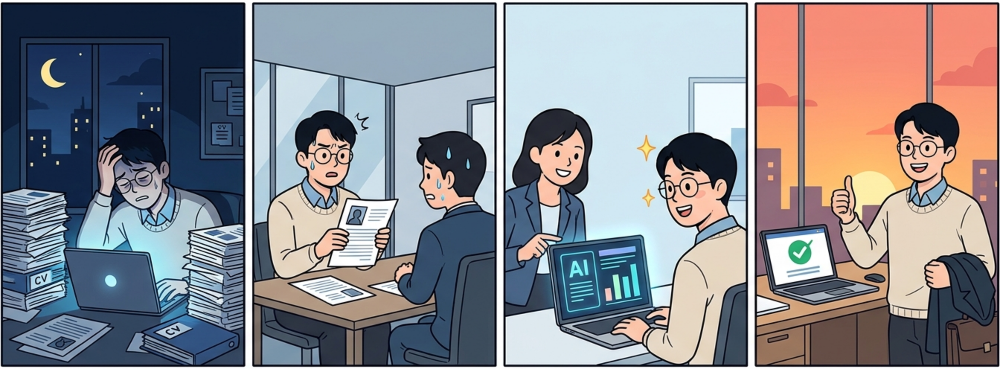
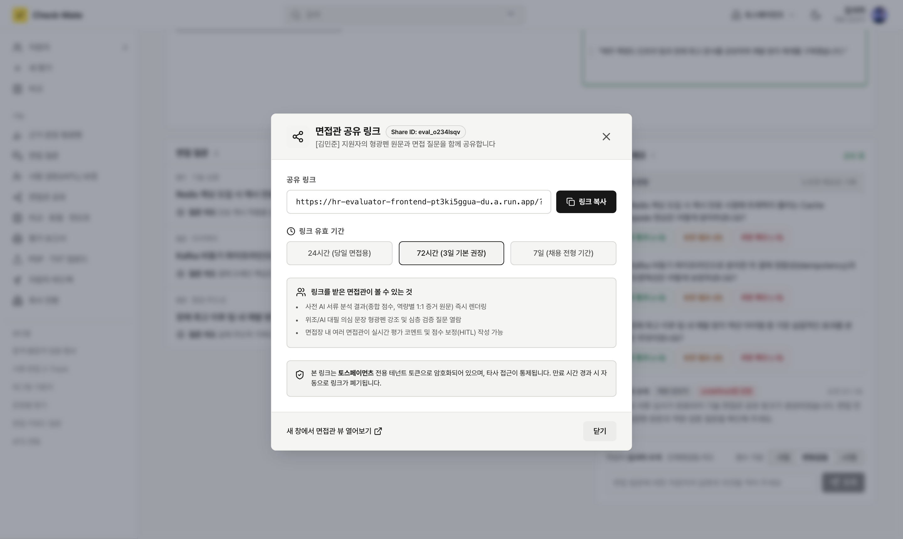
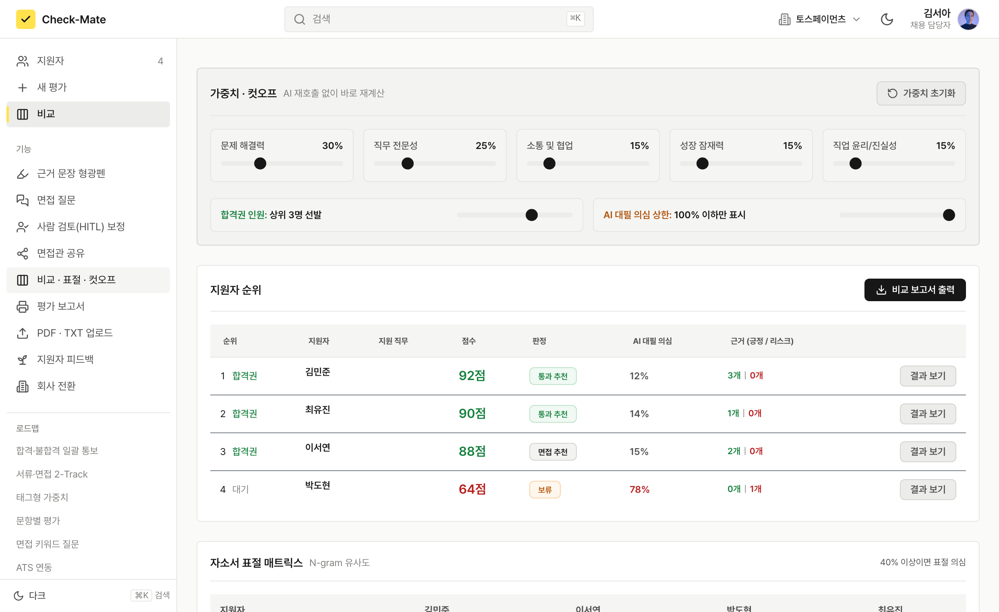

기업용 AI 채용 평가·검증 코파일럿
✓
Check-Mate
Check-Mate
팀 Check-Mate · 장천명
github.com/jcm0314/CapStone-SW-
RECRUITING BOTTLENECK
채용 공고 배포
↓
수백 장의 자소서 접수
↓
문항별 근거·진위 대조
↓
지원자별 면접 질문 추출
⋮

XLSX
2026_상반기_수시채용_서류평가_취합본_최종_진짜최종.xlsx
미검토 142건 · 기준 불일치
지원자
지원 직무
자소서 분량
평가자 A
평가자 B
검증 근거 / 면접 질문
김*훈
백엔드 엔지니어
4,200자
88점 (추천)
62점 (비추천)
근거 메모 없음 (인상 평가)
이*연
그로스 마케터
3,850자
75점
미입력
ROAS 400% 수치 진위 확인 필요
박*준
백엔드 엔지니어
5,100자
80점
79점
생성형 AI 대필 의심 (문체 천편일률)
최*아
B2B 세일즈
3,400자
90점
68점
면접 질문 미작성 (면접 10분 전 열람)
정*우
백엔드 엔지니어
4,600자
84점
82점
타 지원자 자소서와 문단 82% 일치 미발견
한*희
HR 리크루터
3,920자
미열람
미열람
서류 검토 지연 (리드타임 +5일 경과)
오*석
백엔드 엔지니어
4,120자
71점
89점
서류 점수 vs 1차 면접 평가 따로 관리됨
윤*진 외 135명
전 직무 수시채용
평균 4,100자
담당자 1인당 검토 시간 평균 12분 × 150명 = 30시간 수작업 소모
📄
PDF
📝
DOCX
📊
Excel
💬
Slack
🤖
LLM 복붙
✉️
Gmail
📅
Sheet
지원자 자소서 전문 정독 (건당 12분)
이름·연락처·학력 개인정보 수작업 가림
생성형 AI 대필 여부 판별
직무 역량별 가중치 계산
과장·모호한 문장 형광펜 표시
지원자별 압박 면접 질문 작성
문항별 평가 근거 정리
면접관 평가 코멘트 취합
서류·면접 2-Track 점수 대조
합격·불합격 안내 메일 개별 발송
🇰🇷 국내 채용 시장
수시채용·AI 자소서
78% +
기업 10곳 중 8곳 ‘수시채용’ 전환… 현업 팀장이 매주 서류 검토
대규모 정기 공채가 사라지고 직무별 수시채용이 정착되면서 인사팀뿐 아니라 현업 실무자의 서류 검토 피로도가 급증하고 있다.
출처: 한국경영자총협회 · HR 리포트
취준생 73% “자소서 작성에 생성형 AI 활용”… 변별력 확보 비상
매끄럽게 포장된 AI 대필 자소서가 급증하면서 단순 요약이 아닌 ‘실제 경험 근거 문장’과 ‘압박 면접 검증 질문’의 중요성이 커졌다.
출처: 채용 플랫폼 업계 실태조사
개인정보보호법·AI 기본법 강화… 이력서 원문 외부 LLM 입력 주의보
지원자의 이름·연락처·학력 등 민감 개인정보(PII)를 비식별화 없이 상용 AI에 업로드할 경우 기업 컴플라이언스 위반 위험이 발생한다.
출처: 개인정보보호위원회 가이드라인
ATS & LLM
기존 채용 솔루션과 범용 AI의 한계
기존 ATS는 자소서 정밀 평가
불가
범용 LLM 원문 입력 시 개인정보
유출
근거 문장 없는 단일 AI 점수
불신
서류 평가와 면접 검증 기록
단절
접수·일정 관리(ATS)는 보편화되었지만,
‘근거 기반 AI 서류 검증·면접 코파일럿’
은 비어 있습니다
1세대 · 채용 관리 시스템 (ATS)
Greeting
greenhouse
LEVER
Ninehire
workday
• 공고 배포·지원서 취합·면접 일정 조율에 최적화
•
정작 수백 장의 자소서를 읽고 채점하는 일은 사람의 몫
범용 생성형 AI 채팅
ChatGPT
Claude Web
Gemini Web
• 지원자 개인정보(PII) 유출 및 컴플라이언스 위반 위험
•
원문 근거 없는 점수 환각(Hallucination) 및 팀 협업 불가
필요한 것: ATS와 연동되면서 개인정보를 보호하고 1:1 문장 근거로 검증하는 ‘AX 평가 코파일럿’
Check-Mate
🌐
글로벌 기업 67%
AI 채용 검증 도입
단순 서류 접수를 넘어, 지원서 역량 검증과
구조화 면접 질문 생성을 AI 코파일럿으로 전환 중
AI Recruiting Copilot Adoption
67%
서류 스크리닝 · 역량 근거 추출 · 면접 가이드 자동화
1:1 Evidence Grounding
Human-in-the-Loop
33%
기존 수작업 검토 유지
GLOBAL AI RECRUITING
AI 인재 검증 코파일럿 시장
약 4.8조 원 규모
💰
Mercor · Eightfold · Paradox 등 글로벌 AI 채용 검증 솔루션 대규모 투자 유치
💵 💵 💵
✓
Check-Mate
감(感)이 아닌
1:1 문장 근거로,
AX 채용 코파일럿
체크메이트.
1. 직무·가중치 설정
>
2. 비식별 서류 접수
>
3. 4-Agent 근거 평가
>
4. 인간 보정·협업
>
5. 면접·통보·ATS
태그형 역량 가중치 & 직무 프리셋
직무별 5대 역량에
핵심(×1.5) · 기본(×1.0) · 참고(×0.5)
태그만 클릭하면 합계 100%로 자동 정규화되며, 핵심 키워드 태그를 지정할 수 있습니다.
채용 직무: 소프트웨어 엔지니어 (백엔드)
합계 100% 완료
● 문제 해결력 & 논리성
핵심
기본
30%
● 직무 전문성 & 기술 깊이
핵심
기본
30%
● 협업 & 커뮤니케이션
핵심
기본
20%
#대용량트래픽
#MSA아키텍처
#장애대응경험
#데이터기반
✓ Custom HR Prompt Studio를 통해 기업별 인재상과 감점 규칙까지 즉시 반영
채용팀 구성 (멀티테넌트 · 3단계 RBAC)
기업(테넌트)별 데이터가 완벽히 격리되며,
HR 관리자 · 채용 담당자 · 실무 면접관
역할에 따라 조회·보정·설정 권한이 자동 제어됩니다.
✓ 토스 · 당근 · 쿠팡 등 멀티테넌트 전환 및 역할별 최소 권한 원칙 적용
1. 직무·가중치 설정
>
2. 비식별 서류 접수
>
3. 4-Agent 근거 평가
>
4. 인간 보정·협업
>
5. 면접·통보·ATS
Zero-Trust 브라우저 로컬 파싱 & PII 마스킹
✓
➔
📄 PDF 이력서·자소서
📝 DOCX 워드 지원서
📋 TXT / 직접 붙여넣기
🔒 6종 개인정보 99.8% 마스킹
이름 · 전화번호 · 이메일 · 주민번호 · 주소 · 출신학교를
외부 AI 전송 전에 브라우저에서 즉시
[NAME] · [PHONE] · [UNIV]
로 치환
PDF · DOCX 자동 텍스트 추출
실시간 PII 개인정보 마스킹 미리보기
1. 직무·가중치 설정
>
2. 비식별 서류 접수
>
3. 4-Agent 근거 평가
>
4. 인간 보정·협업
>
5. 면접·통보·ATS
파일 다운로드 없이 한 화면에서
1:1 문장 하이라이트 근거 · 역량 점수 · 문항별 평가
를 즉시 확인
■ 초록 형광펜: 우수 역량 근거
■ 노란 형광펜: 과장·면접 검증 필요
Check-Mate 4-Agent Grounding Viewer (Extractor → Critic → Scorer → Interviewer)
1. 직무·가중치 설정
>
2. 비식별 서류 접수
>
3. 4-Agent 근거 평가
>
4. 인간 보정·협업
>
5. 면접·통보·ATS
Interviewer Agent · 면접 키워드 질문
의심되는 자소서 문장마다
근거 인용 + 질문 의도 +
체크리스트
를 자동 생성
면접관이 면접 5분 전에 들어와도 핵심을 찌를 수 있도록
#아키텍처·설계 #성능·트래픽 #문제해결 #협업·소통
키워드 태그별로 질문을 묶어서 제공합니다.
자소서 원문 인용 예시
“Redis 캐시와 Kafka 비동기 큐를 도입해 응답 속도를 40% 단축했습니다.”
➔ 캐시 정합성(Cache Invalidation) 장애 상황과 컨슈머 지연 대처법을 묻는 심층 질문 즉시 생성
지원자 맞춤형 면접 질문 & 키워드 태그 필터
1. 직무·가중치 설정
>
2. 비식별 서류 접수
>
3. 4-Agent 근거 평가
>
4. 인간 보정·협업
>
5. 면접·통보·ATS
Human-in-the-Loop (HITL) 보정
AI 초안 점수를 인사담당자가 직접 보정·롤백
사람 검토(HITL) 점수 보정 & 원본 복원
면접관 실시간 공유 링크
만료 시간(TTL) 보안 링크 & 실시간 메모 동기화
면접관 공유 링크 & 협업 메모

1. 직무·가중치 설정
>
2. 비식별 서류 접수
>
3. 4-Agent 근거 평가
>
4. 인간 보정·협업
>
5. 면접·통보·ATS
서류·면접 2-Track 통합
↓
컷오프 · 표절 유사도 검증
↓
합격·불합격 메일 발송
↓
ATS Webhook 실시간 연동
지원자 순위·컷오프 시뮬레이션부터
Resend 결과 메일 발송 & 그리팅·Greenhouse ATS 연동
까지 원클릭 완료
지원자 다중 비교 · 컷오프 · 표절 탐지 · 결과 메일 발송

테넌트 데이터 잠금 🔒
Supabase PostgreSQL RLS & 역할별 공개범위 설정
기업(테넌트) 간 지원자·평가 데이터가 DB 커널 레벨(Row-Level Security)에서 격리되어 외부 유출을 원천 차단합니다.
채용 전반과 AI 비용을 한눈에 보는 대시보드 📊
부서별 AI 크레딧 사용량, 4-Agent 단계별 지연 시간, 지원자 성장 피드백 리포트(ESG)까지 통합 관리합니다.
부서별 AI 크레딧 쿼터 & 거버넌스 대시보드
MVP 0.1.0 ➔ Production v2.0
현업 HR 멘토링 & 사용자 VOC 기반 11대 기능 100% 반영
🙋🏻♂️
“AI 점수를 왜 믿어야 하는지 자소서 원문 문장 근거가 바로 보이면 좋겠어요!”
✓
1:1 문장 형광펜 하이라이트 & 문항별 평가 아코디언을 추가했습니다!
🙋🏻♀️
“AI 평가가 현업 기준과 다를 때 담당자가 점수를 직접 수정할 수 있나요?”
✓
HITL 인간 보정 모달 & AI 초안 원클릭 복원 기능을 반영했습니다!
👨🏻💼
“서류 점수랑 실제 면접관 평가 기록을 나란히 두고 괴리를 비교하고 싶어요!”
✓
서류·면접 2-Track 나란히 보기 & 15점 편차 주의 배지를 추가했습니다!
👩🏻💻
“평가 완료 후 그리팅 같은 기존 ATS 연동이나 합격 통보 메일도 바로 되나요?”
✓
5대 ATS Webhook 실시간 연동 & Resend 메일 발송을 구축했습니다!
아이디어 수준이 아닌,
즉시 도입 가능한 엔터프라이즈 프로덕션 검증 완료
자동화 테스트 통과
170 Tests
34개 테스트 스위트 100% Pass
제품 로드맵 달성률
11 / 11
계획된 모든 기능 100% Ready
1인당 서류 검토 시간
-93.7%
기존 12분 ➔ 평균 45초 단축
개인정보 비식별 차단율
99.8%
6종 PII 로컬 정규식 마스킹
멀티에이전트 엔진
4-Stage AI
Extractor·Critic·Scorer·Interviewer
백엔드 아키텍처
Node + Spring
Express BFF + Spring Boot 3.3
멀티테넌트 DB 격리
Supabase RLS
7개 테이블 커널 레벨 보안 격리
클라우드 무중단 인프라
Cloud Run
GCP Cloud Build 자동 배포
하이브리드 캐시
SHA-256
IndexedDB 3-Tier 무결성 캐싱
외부 ATS 생태계
5대 ATS
그리팅·나인하이어·Greenhouse 등
결과 메일 자동화
Resend API
합격·불합격·면접 안내 즉시 발송
ESG 지원자 환류
성장 리포트
강점·보완점 코칭 피드백 생성
Basic Plan
스타트업 · 초기 채용팀
연간 결제
₩45,000
/ 월
주요 기능
✔
월 100건 AI 4-Agent 서류 평가
✔
6종 개인정보(PII) 자동 비식별화
✔
1:1 문장 하이라이트 & 문항별 평가
✔
맞춤형 면접 키워드 질문 생성
Standard Plan
수시채용 스케일업 기업
연간 결제
₩180,000
/ 월
주요 기능
Basic의 모든 기능 +
✔
월 500건 평가 & 태그형 가중치
✔
사람 검토(HITL) 보정 & 롤백
✔
서류·면접 2-Track 통합 비교
✔
면접관 공유 링크 & 실시간 메모
✔
합격·불합격 안내 메일 발송
Business Plan
중견·대기업 엔터프라이즈
연간 결제
₩360,000~
/ 월
주요 기능
Standard의 모든 기능 +
✔
무제한 평가 & 부서별 크레딧 쿼터
✔
그리팅·Greenhouse 등 ATS Webhook 연동
✔
Custom HR 프롬프트 스튜디오
✔
지원자 ESG 성장 피드백 리포트
✔
전용 Supabase RLS 테넌트 격리
지원자 100명 서류 평가·면접 질문 도출 처리량 (시간당)
서류 검토 속도
16배 향상 (93.7% 단축!)
5명/h
12명/h
25명/h
45명/h
80명/h!
수작업 정독
엑셀 취합
범용 LLM
Check-Mate v1
Check-Mate v2
반복 조회·협업 시 SHA-256 캐시 히트율 및 근거 정합성 📈
AI 토큰 비용
68% 절감 · 정합성 94% 돌파!
94.2%
단일 프롬프트
2-Agent 분리
PII 마스킹
fuzzyMatcher 보정
4-Agent + HITL
Phase 1 · 초기 진입 시장
스타트업 · IT 기업
수시채용 빈도가 높은 3,000개 혁신 기업
Phase 2–3 · 스케일업 타겟 시장
30인 이상 기업
39만 곳
💰💰💰
기존 ATS(그리팅·나인하이어·Greenhouse)를 이미 쓰거나 도입 중인 모든 기업 위에
Webhook 하나로 즉시 결합되는 ‘AI 서류 검증·면접 코파일럿 레이어’
EXECUTION & MILESTONES
사용자가 겪는 채용 검증 문제를 파악하고, 가장 빠른 실행력으로 해결합니다
STEP 01
HR 현업 문제 정의
인사담당자 심층 인터뷰 및 3대 병목 도출
STEP 02
Zero-Trust & 4-Agent
로컬 PII 마스킹 + Claude 4-Stage 파이프라인
STEP 03
하이브리드 백엔드 & RLS
Node BFF + Spring Boot 3.3 + Supabase DB
STEP 04
로드맵 11대 기능 완주
2-Track · 태그가중치 · 문항별평가 · ATS 연동
STEP 05 · LIVE
170 Tests & 클라우드 배포
GCP Cloud Run 무중단 배포 및 상용 검증
장천명
Chunmyung Jang · 32203919
Project Lead & Architect
단국대학교 소프트웨어학과
AI Multi-Agent Engine
Claude Sonnet 4.5 · 1:1 Grounding
4-Stage 파이프라인 설계
PII Anonymizer · Fuzzy Matcher
Full-Stack & Cloud Infra
React 19 · Node BFF · Spring Boot 3.3
Supabase RLS · Cloud Run
34 Test Suites · 170 Unit Tests
KT AIVLE School 빅프로젝트
생성형 AI 도메인 실전 역량
우수상 수상 검증
실제 현업 문제 해결 경험
Product-Led Execution
기획 · 디자인 · 개발 · 배포 전 과정
114 PRs Merged
빠른 VOC 반영 및 린 이터레이션
Check-Mate
AX HR 코파일럿 Check-Mate
github.com/jcm0314/CapStone-SW-
Q&A
AX HR 코파일럿 Check-Mate · 경청해 주셔서 감사합니다
실서비스 라이브 데모
GCP Cloud Run 가동 중
GitHub 소스코드
jcm0314/CapStone-SW-
이봐, 해봤어?
아산 정주영